CS180 / CS280A · Fall 2026 · Project 01
Images of the
Russian Empire
Single-scale alignment
Exhaustively search a small translation window.
For each moving channel, I search all integer displacements in [−15, 15] × [−15, 15]. Every candidate is scored on the same valid interior region of the blue channel. A 10% border is excluded, with a larger margin when necessary to avoid shifted invalid pixels.
L2 distance · minimize
L2(T, P) = √[Σi (Ti − Pi)²]
Penalize differences in intensity between corresponding pixels.
Normalized cross-correlation · maximize
NCC(T, P) = Σi (Ti − T̄)(Pi − P̄)
/ [‖T − T̄‖₂ ‖P − P̄‖₂]
Subtract each patch’s mean and normalize its length before comparing.
Here T is the reference patch and P is the shifted moving patch. NCC is negated internally so both metrics use the same minimization loop. Shifts are represented internally as (dy, dx) and reported as (x, y); positive values move a channel right and down, respectively. Both green and red offsets are relative to blue.
| Image | Metric | G (x, y) | R (x, y) | Time (s) |
|---|---|---|---|---|
| cathedral.jpg | L2 | (2, 5) | (3, 12) | 0.098 |
| cathedral.jpg | NCC | (2, 5) | (3, 12) | 0.172 |
| monastery.jpg | L2 | (2, -3) | (2, 3) | 0.094 |
| monastery.jpg | NCC | (2, -3) | (2, 3) | 0.172 |
| tobolsk.jpg | L2 | (3, 3) | (3, 6) | 0.094 |
| tobolsk.jpg | NCC | (3, 3) | (3, 6) | 0.174 |
Time includes both channel searches and RGB composition; loading and display are excluded.
Results & discussion
- L2 and NCC produced identical offsets for all three images, giving the same aligned results.
- Alignment visibly reduced color fringes around buildings and other scene details. Colored scan borders remain and will be addressed by automatic cropping.
- L2 took about 0.09–0.10 seconds per image, while NCC took 0.17–0.19 seconds. Both metrics produced the same alignment on these examples.
- All estimated shifts fell within the search window of ±15 pixels. Larger displacements in high-resolution images will require multi-scale alignment.
Cathedral
Provided scan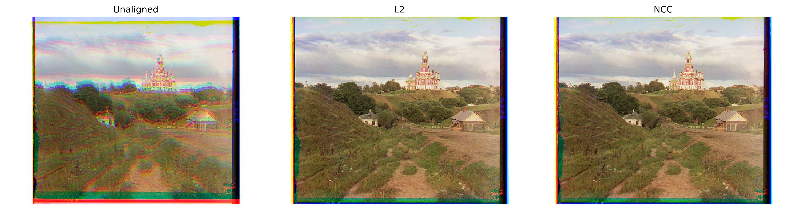
Monastery
Provided scan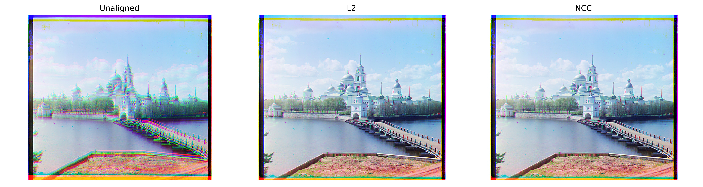
Tobolsk
Provided scan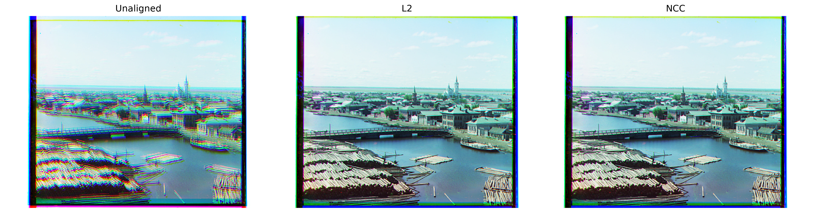
Multi-scale pyramid alignment
Recover large displacements while retaining raw-pixel L2 and NCC.
A ±15-pixel search is sufficient for the small JPGs, but the larger TIFF scans have much larger translations. Searching the entire displacement range at full resolution would be expensive. A coarse image makes a large displacement small enough to estimate cheaply.
- Build the pyramid. Gaussian-smooth each level with σ = 1, then retain every second pixel in each dimension. Repeat until the longest side is at most 256 pixels. The pyramid is constructed explicitly, without a high-level pyramid or registration routine.
- Search at the coarsest level. Evaluate all shifts within ±15 pixels using L2 or NCC on channel intensities.
- Refine from coarse to fine. Double the previous shift, then search within ±2 pixels of that estimate. Continue through the original-resolution level.
- Compose the image. Apply the final shifts to the original intensity channels and retain their common valid overlap. Automatic scan-border detection is a separate extension.
All 17 scans use the same settings. At every level, a fixed interior patch excludes the outer 10% and any invalid shifted pixels. Gaussian smoothing suppresses aliasing before downsampling; taking every second pixel preserves an exact factor-of-two coordinate relationship.
| Image | Set | Metric | G (x, y) | R (x, y) | Levels | Time (s) |
|---|---|---|---|---|---|---|
| cathedral | provided | L2 | (2, 5) | (3, 12) | 2 | 0.06 |
| cathedral | provided | NCC | (2, 5) | (3, 12) | 2 | 0.09 |
| church | provided | L2 | (4, 25) | (266, 64) | 5 | 0.99 |
| church | provided | NCC | (4, 25) | (-4, 58) | 5 | 1.61 |
| emir | provided | L2 | (24, 49) | (57, 103) | 5 | 1.04 |
| emir | provided | NCC | (24, 49) | (-205, 141) | 5 | 1.60 |
| harvesters | provided | L2 | (16, 59) | (13, 124) | 5 | 1.15 |
| harvesters | provided | NCC | (17, 60) | (13, 124) | 5 | 1.64 |
| icon | provided | L2 | (17, 41) | (23, 90) | 5 | 1.06 |
| icon | provided | NCC | (17, 41) | (23, 89) | 5 | 1.62 |
| ilemselga | provided | L2 | (7, 39) | (11, 130) | 5 | 1.02 |
| ilemselga | provided | NCC | (7, 40) | (11, 130) | 5 | 1.68 |
| melons | provided | L2 | (11, 82) | (13, 178) | 5 | 1.00 |
| melons | provided | NCC | (11, 82) | (13, 178) | 5 | 1.59 |
| monastery | provided | L2 | (2, -3) | (2, 3) | 2 | 0.06 |
| monastery | provided | NCC | (2, -3) | (2, 3) | 2 | 0.09 |
| religous_painting | provided | L2 | (3, 28) | (7, 68) | 5 | 0.96 |
| religous_painting | provided | NCC | (3, 28) | (7, 68) | 5 | 1.57 |
| self_portrait | provided | L2 | (29, 79) | (37, 176) | 5 | 1.01 |
| self_portrait | provided | NCC | (29, 79) | (37, 176) | 5 | 1.61 |
| siren | provided | L2 | (-6, 49) | (-25, 96) | 5 | 1.03 |
| siren | provided | NCC | (-6, 49) | (-25, 96) | 5 | 1.66 |
| three_generations | provided | L2 | (14, 53) | (11, 112) | 5 | 0.99 |
| three_generations | provided | NCC | (14, 53) | (11, 112) | 5 | 1.58 |
| tobolsk | provided | L2 | (3, 3) | (3, 6) | 2 | 0.06 |
| tobolsk | provided | NCC | (3, 3) | (3, 6) | 2 | 0.09 |
| wharf | provided | L2 | (-7, 15) | (-16, 83) | 5 | 1.01 |
| wharf | provided | NCC | (-7, 15) | (-16, 83) | 5 | 1.58 |
| lugano | selected | L2 | (-16, 41) | (-29, 93) | 5 | 0.99 |
| lugano | selected | NCC | (-16, 41) | (-29, 93) | 5 | 1.57 |
| novaia_ladoga | selected | L2 | (21, 13) | (27, 36) | 5 | 0.96 |
| novaia_ladoga | selected | NCC | (21, 13) | (27, 36) | 5 | 1.53 |
| upper_volga_lock | selected | L2 | (21, 52) | (37, 120) | 5 | 0.96 |
| upper_volga_lock | selected | NCC | (21, 52) | (37, 120) | 5 | 1.53 |
Timing includes all three pyramids, both alignment searches, and RGB composition, but excludes loading and display. Pyramid construction is shared during the experiment and charged to each metric’s standalone total. Latest recorded medians: L2 0.99 s; NCC 1.58 s. Maximums: 1.15 s and 1.68 s.
Results & discussion
- The pyramid recovered large translations with five levels on the TIFF scans. For example, the red channel of
melonsrequired(x, y) = (13, 178), beyond Part 1's ±15-pixel window. - With the same parameters for all 17 images, NCC produced visually good overall alignment on 16 images;
emirwas the clear failure. This is a visual assessment, not a ground-truth accuracy measurement. - L2 and NCC returned identical offsets on 12 of 17 images, including all three selected examples. NCC corrected the large L2 error on
church, consistent with its lower sensitivity to brightness differences. - On
emir, NCC misaligned the red channel, while L2 was closer but still left fringes in the clothing. Strong color-dependent brightness differences can favor incorrect raw-pixel matches; coarse-to-fine refinement can then retain that error. Gradient features are a useful next experiment. - Both methods completed each image well below the one-minute target. The table reports alignment time, including pyramid construction and RGB composition, but excludes loading and display.
- Scan borders, color casts, and localized artifacts remain after alignment. The yellow sky band in
novaia_ladogapersists despite aligned building edges, indicating a channel appearance artifact that translation alone cannot fix.
All 14 provided scans
Cathedral
Provided scan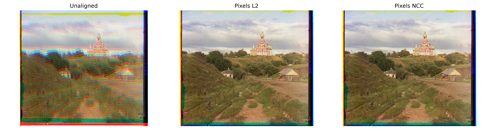
Church
Provided scan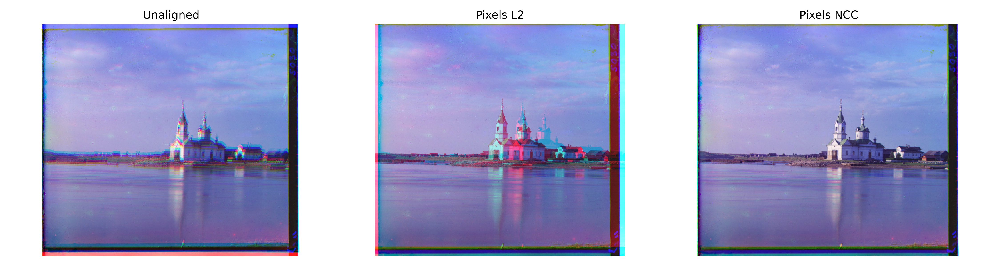
Emir of Bukhara
Provided scan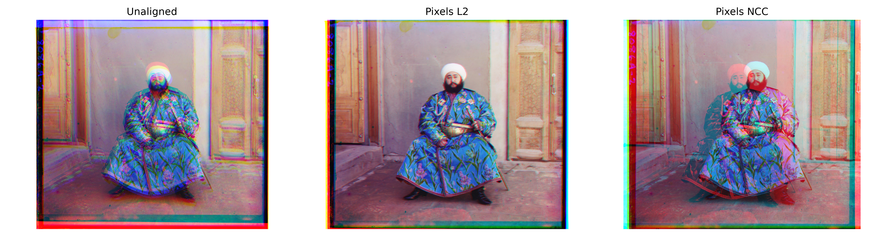
Harvesters
Provided scan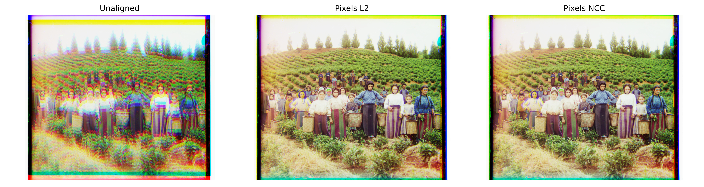
Icon
Provided scan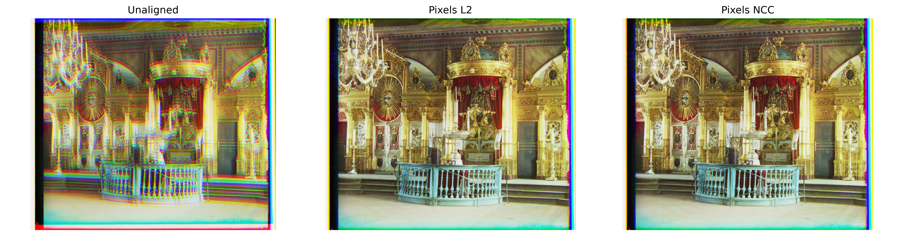
Ilemselga
Provided scan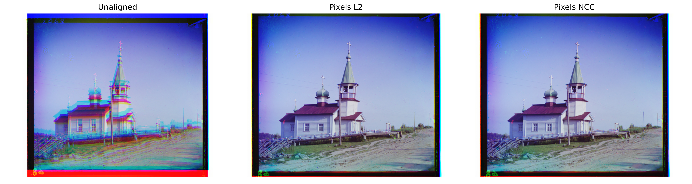
Melons
Provided scan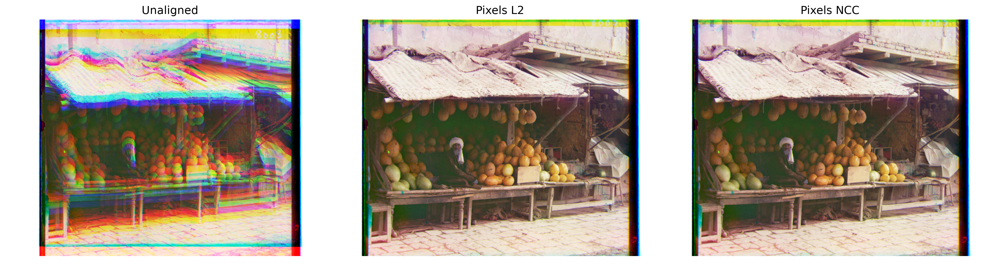
Monastery
Provided scan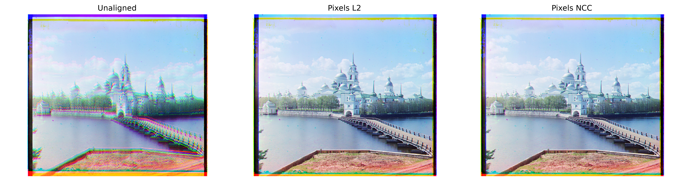
Religious painting
Provided scan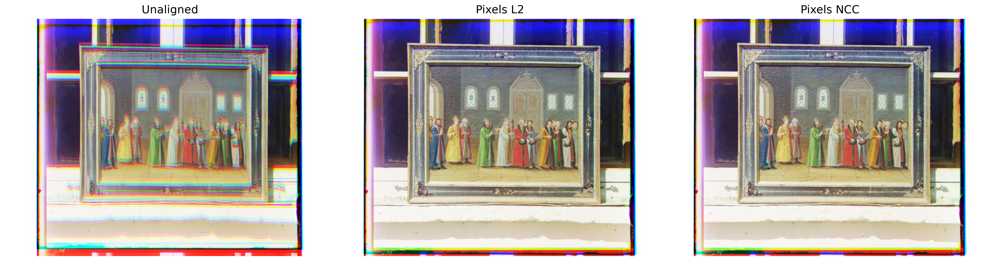
Self portrait
Provided scan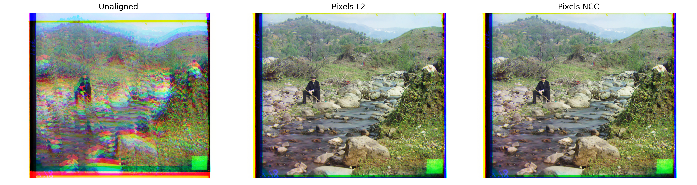
Siren
Provided scan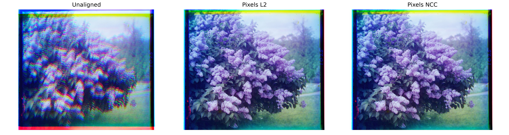
Three generations
Provided scan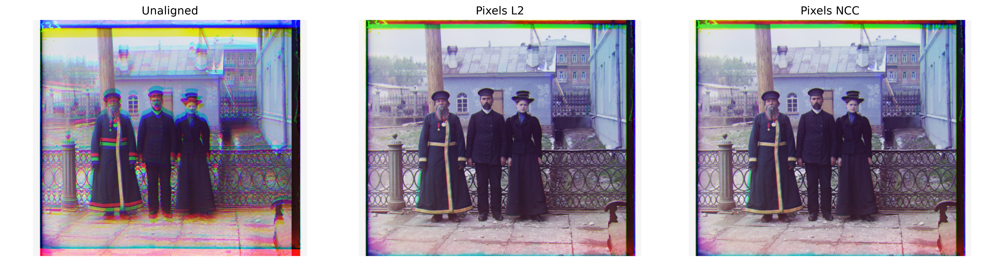
Tobolsk
Provided scan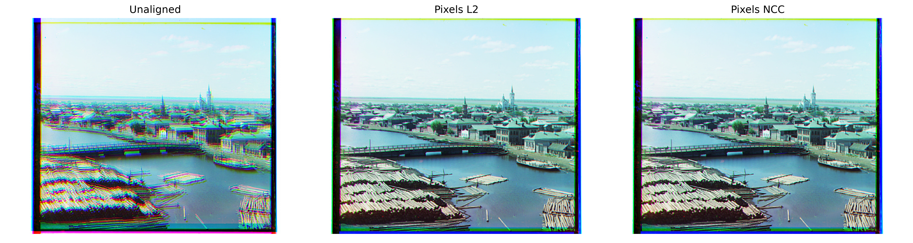
Wharf
Provided scan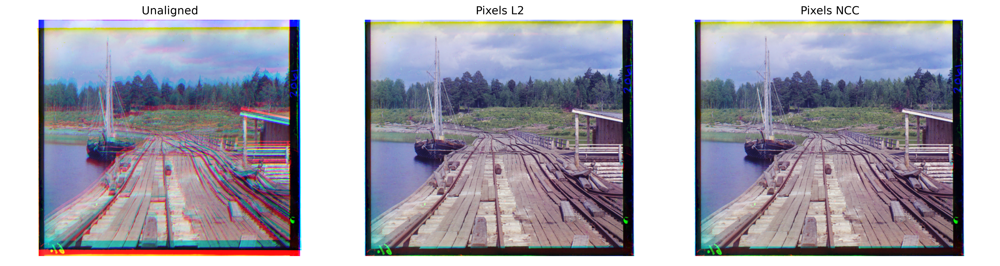
Three additional scans
I use three original, vertically stacked three-frame scans from the Library of Congress collection. They are additional inputs to the same algorithm, not already aligned color composites. Their offsets and runtime appear in the table above.
- Lugano: collection record · original TIFF
- Novaia Ladoga: collection record · original TIFF
- Upper Volga lock: collection record · original TIFF
Lugano
Selected scan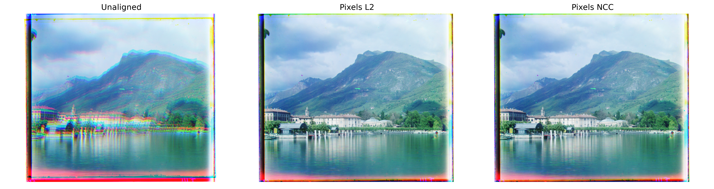
Novaia Ladoga
Selected scan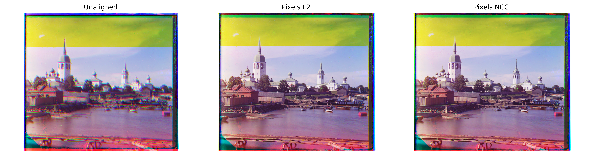
Upper Volga lock
Selected scan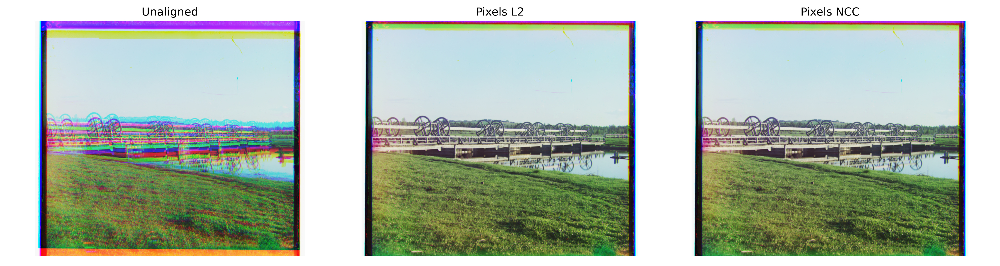
Better features
Match shared structure when color channels disagree in brightness.
Raw pixel intensities are not always comparable across color channels. Emir’s blue clothing, for example, has very different brightness in the red, green, and blue records. Matching edges can retain shared scene structure even when intensity or contrast direction changes.
At each pyramid level, I smooth the image with σ = 1 and compute the gradient magnitude using finite differences:
F(I) = √[(∂x(Gσ ∗ I))² + (∂y(Gσ ∗ I))²]
I align these feature maps with NCC, retaining the same blue reference, pyramid construction, search windows, and border margin as the pixel baseline. Magnitude discards edge sign and direction. The output colors still come from the original intensity channels; this comparison adds no color correction.
Results & discussion
- Gradient-magnitude NCC corrected the large red-channel error on
emir: its(x, y)offset changed from(-205, 141)to(40, 107). The overview comparison shows much less ghosting and clearer patterns. - Emir's clothing has very different brightness across B/G/R, while many structural edges remain shared. Matching gradient magnitude makes those boundaries more useful than their absolute intensity values.
- Across all 17 images, the gradient results showed no new obvious global misalignment on visual inspection. Five images retained exactly the same offsets; most other changes were only a few pixels. Such small changes do not establish better accuracy without ground-truth offsets.
- In the latest recorded run, median time was 1.60 s for pixel NCC and 2.00 s for gradient NCC; the gradient maximum was 2.10 s. Times include pyramid construction, feature extraction, both channel searches, and RGB composition, but exclude loading and display.
- Gradients can emphasize noise, scratches, and repeated edges, and they discard information in smooth regions. Small local fringes, moving objects, scan borders, and color artifacts can remain; this method improves translation estimates rather than restoring every defect.
| Image | Features | G (x, y) | R (x, y) | Time (s) |
|---|---|---|---|---|
| cathedral | pixels | (2, 5) | (3, 12) | 0.09 |
| cathedral | gradients | (2, 5) | (3, 12) | 0.07 |
| church | pixels | (4, 25) | (-4, 58) | 1.88 |
| church | gradients | (4, 25) | (-4, 58) | 2.01 |
| emir | pixels | (24, 49) | (-205, 141) | 1.64 |
| emir | gradients | (23, 49) | (40, 107) | 2.08 |
| harvesters | pixels | (17, 60) | (13, 124) | 1.60 |
| harvesters | gradients | (17, 60) | (13, 123) | 1.97 |
| icon | pixels | (17, 41) | (23, 89) | 1.64 |
| icon | gradients | (17, 42) | (23, 90) | 2.04 |
| ilemselga | pixels | (7, 40) | (11, 130) | 1.65 |
| ilemselga | gradients | (7, 40) | (11, 131) | 2.07 |
| melons | pixels | (11, 82) | (13, 178) | 1.62 |
| melons | gradients | (10, 80) | (13, 177) | 2.01 |
| monastery | pixels | (2, -3) | (2, 3) | 0.09 |
| monastery | gradients | (2, -3) | (2, 3) | 0.07 |
| religous_painting | pixels | (3, 28) | (7, 68) | 1.56 |
| religous_painting | gradients | (6, 30) | (7, 69) | 2.00 |
| self_portrait | pixels | (29, 79) | (37, 176) | 1.61 |
| self_portrait | gradients | (29, 78) | (37, 176) | 2.02 |
| siren | pixels | (-6, 49) | (-25, 96) | 1.85 |
| siren | gradients | (-6, 49) | (-25, 96) | 2.10 |
| three_generations | pixels | (14, 53) | (11, 112) | 1.58 |
| three_generations | gradients | (13, 54) | (9, 111) | 1.94 |
| tobolsk | pixels | (3, 3) | (3, 6) | 0.09 |
| tobolsk | gradients | (3, 3) | (3, 6) | 0.07 |
| wharf | pixels | (-7, 15) | (-16, 83) | 1.62 |
| wharf | gradients | (-7, 15) | (-17, 83) | 2.00 |
| lugano | pixels | (-16, 41) | (-29, 93) | 1.58 |
| lugano | gradients | (-17, 41) | (-29, 92) | 1.97 |
| novaia_ladoga | pixels | (21, 13) | (27, 36) | 1.53 |
| novaia_ladoga | gradients | (21, 13) | (27, 35) | 1.91 |
| upper_volga_lock | pixels | (21, 52) | (37, 120) | 1.52 |
| upper_volga_lock | gradients | (22, 52) | (37, 120) | 1.91 |
Emir of Bukhara
Provided scan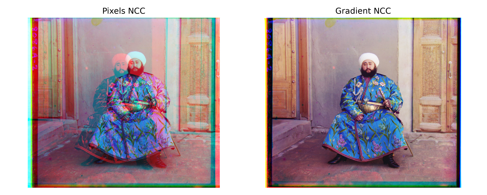
Cathedral
Provided scan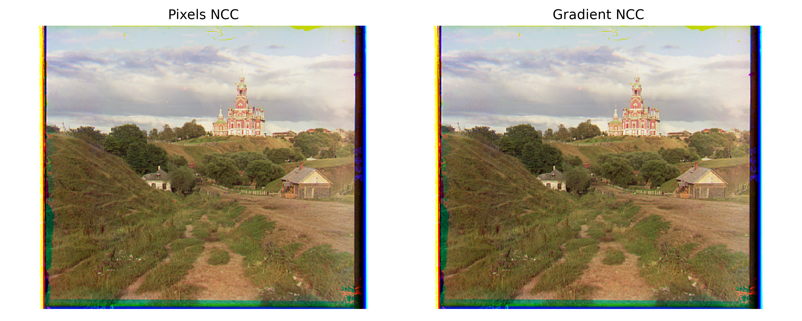
Church
Provided scan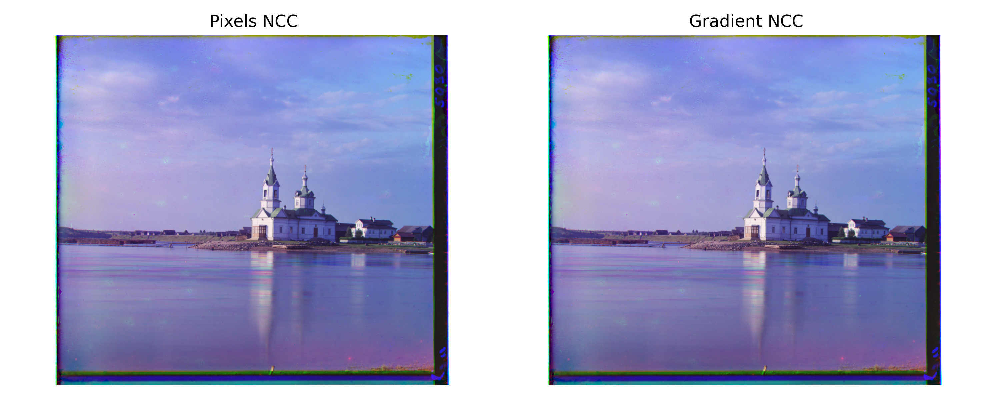
Harvesters
Provided scan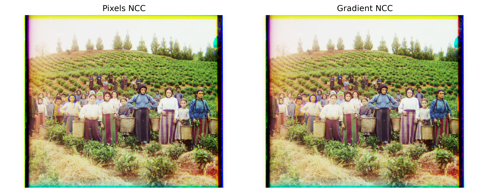
Icon
Provided scan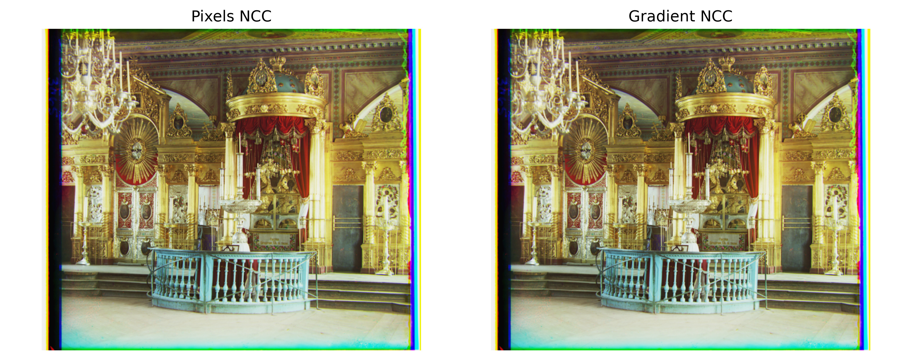
Ilemselga
Provided scan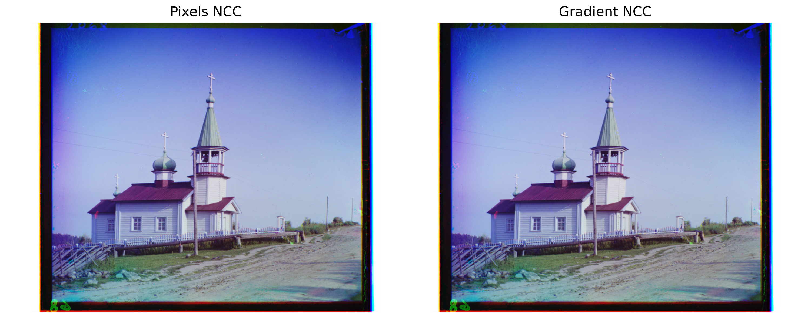
Melons
Provided scan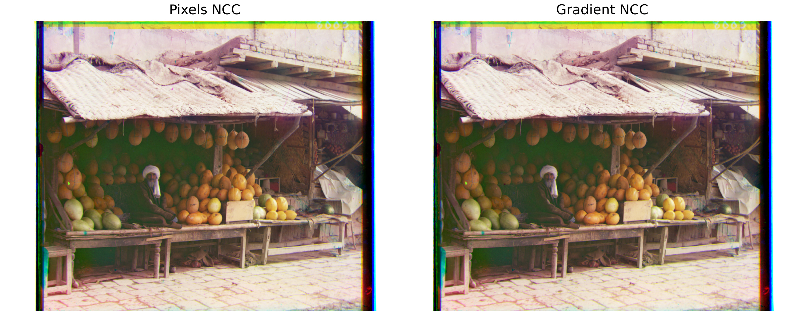
Monastery
Provided scan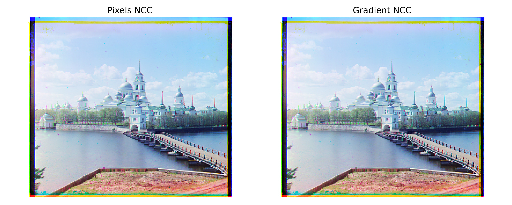
Religious painting
Provided scan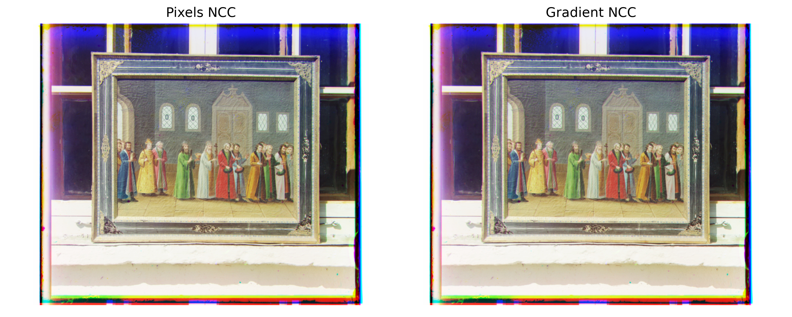
Self portrait
Provided scan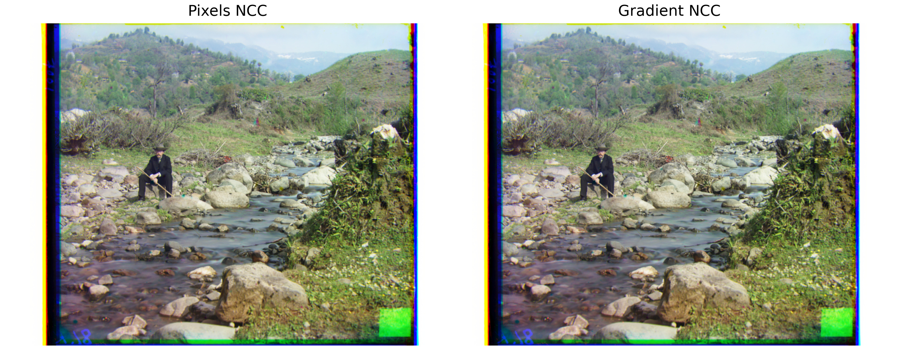
Siren
Provided scan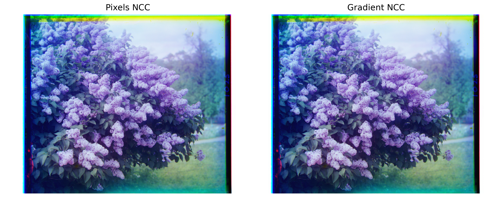
Three generations
Provided scan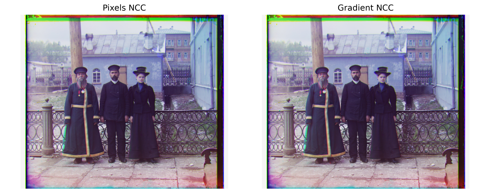
Tobolsk
Provided scan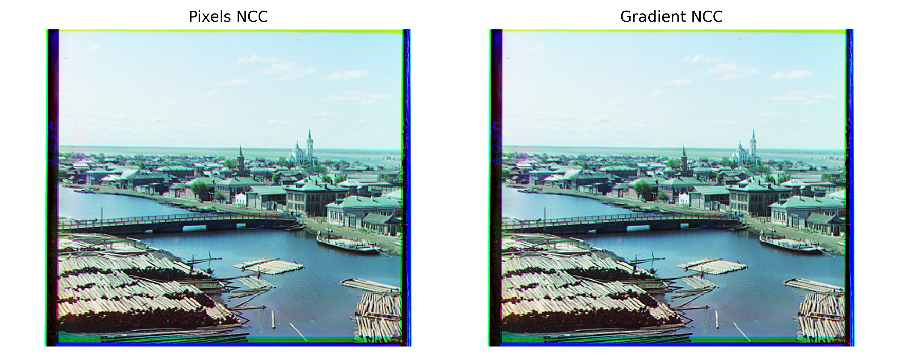
Wharf
Provided scan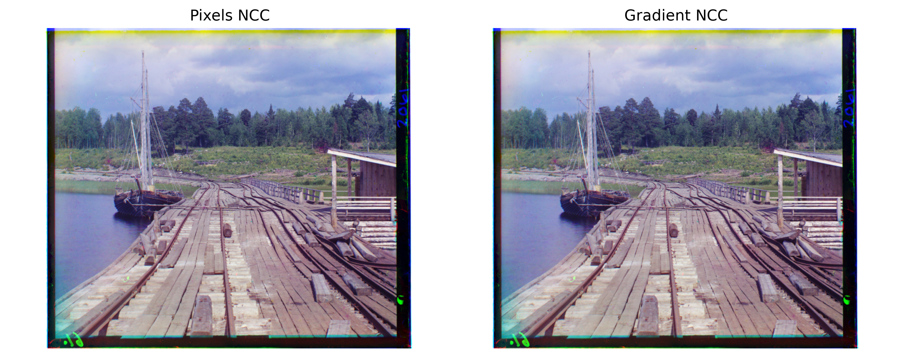
Lugano
Selected scan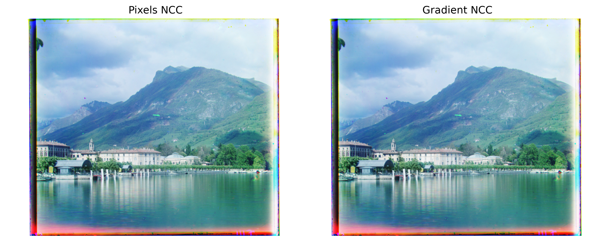
Novaia Ladoga
Selected scan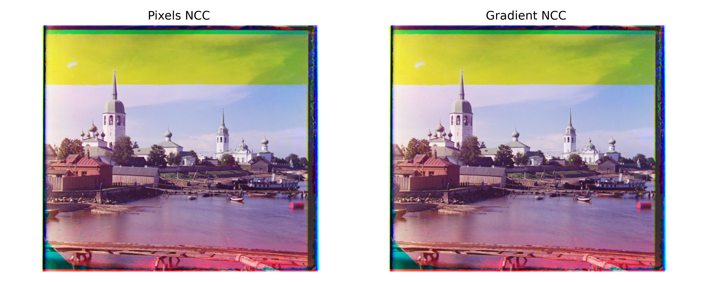
Upper Volga lock
Selected scan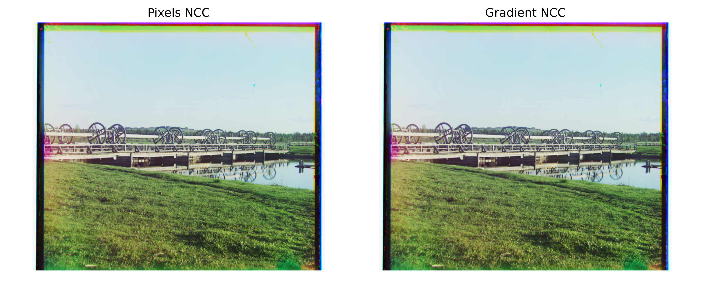
Automatic cropping
Detect scan borders from image content instead of removing a fixed margin.
Translation removes the invalid overlap but leaves black, white, and colored scan borders. I start from the gradient-aligned RGB image and classify border-like pixels using channel extrema and channel disagreement. Complete rows and columns are scanned at full resolution.
- Strong evidence: very dark pixels (maximum < 0.18), white pixels (minimum > 0.95), or strongly tinted pixels (channel spread > 0.40, together with minimum < 0.12 or maximum > 0.80).
- Weak evidence: strong pixels plus darker pixels (maximum < 0.25), or tinted pixels with spread > 0.20 and minimum < 0.20 or maximum > 0.80.
- Start near the edge: seed a border where strong-pixel coverage reaches 32.5%. Base continuation thresholds are 65% strong and 50% weak coverage.
- Adapt to nearby content: inspect coverage 3–10% inward. Raise the strong threshold to at least the local 80th percentile + 0.15, and the weak threshold to at least the local median + 0.15, capped at 0.95. This reduces confusion with bright walls, vegetation, and sky.
- Stop and recheck: a clean run spans 1% of the current dimension, at least two pixels. Weak fringes extend at most three clean-run lengths beyond strong evidence. Up to two rechecks require 85% strong coverage near the new edge.
The cumulative crop is capped at 15% per side of the aligned image. This is a search limit, not a fixed crop amount. The same rules apply to every image, and cropping leaves retained RGB values unchanged.
Results & discussion
- The first version detected extreme colors on a resized preview and used the strongest color transition as a fallback. It missed faded or thin borders and sometimes selected a boundary between colored bands instead of the inner frame edge.
- Full-resolution scanning with strong and weak thresholds removed more black and colored borders. However, persistent weak responses from sky, vegetation, and shadows caused substantial overcropping, and repeated scans could extend it further.
- Limiting weak-fringe extension and requiring stronger evidence for rechecks reduced overcropping. Fixed thresholds still removed too much of the walls in
religous_painting, the surroundings inmonastery, the left side ofilemselga, and the right side ofchurch. - Simply raising global thresholds preserved more content but allowed some black and colored strips to reappear in trial results.
- The final version adapts continuation thresholds to nearby scene coverage using the same rule for all images. It better balances frame removal and content preservation, although faint fringes, gradual color casts, and isolated corner marks remain.
| Image | Crop box (L, T, R, B) | Retained area | Alignment (s) | Crop (s) |
|---|---|---|---|---|
| cathedral | (13, 2, 368, 318) | 88.1% | 0.07 | 0.007 |
| church | (76, 3, 3442, 3017) | 89.0% | 2.42 | 0.598 |
| emir | (175, 23, 3536, 3025) | 88.8% | 2.14 | 0.585 |
| harvesters | (152, 74, 3476, 3058) | 87.4% | 2.10 | 0.616 |
| icon | (201, 98, 3538, 3083) | 84.9% | 2.08 | 0.597 |
| ilemselga | (232, 98, 3580, 3030) | 82.5% | 2.08 | 0.621 |
| melons | (180, 88, 3530, 3064) | 86.6% | 2.05 | 0.589 |
| monastery | (19, 11, 375, 328) | 86.6% | 0.07 | 0.007 |
| religous_painting | (120, 43, 3573, 3013) | 87.9% | 1.98 | 0.594 |
| self_portrait | (293, 11, 3612, 3015) | 85.9% | 2.10 | 0.597 |
| siren | (202, 108, 3604, 3056) | 83.9% | 2.12 | 0.601 |
| three_generations | (124, 120, 3493, 3091) | 87.3% | 1.97 | 0.583 |
| tobolsk | (19, 4, 378, 324) | 87.3% | 0.07 | 0.007 |
| wharf | (150, 68, 3507, 3031) | 84.0% | 2.01 | 0.593 |
| lugano | (159, 17, 3593, 3064) | 88.5% | 2.04 | 0.918 |
| novaia_ladoga | (105, 112, 3476, 3087) | 86.4% | 1.92 | 0.587 |
| upper_volga_lock | (147, 125, 3523, 3115) | 88.4% | 1.94 | 0.612 |
Boxes are (left, top, right, bottom) in the aligned image, with exclusive right and bottom boundaries. Crop detection time is reported separately from alignment.
Cathedral
Provided scan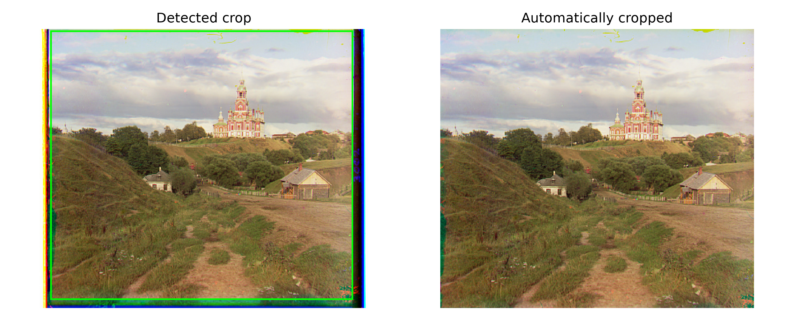
Church
Provided scan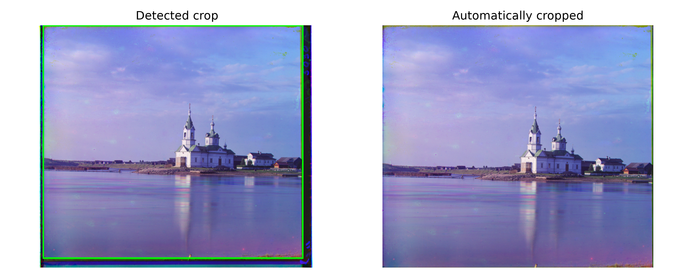
Emir of Bukhara
Provided scan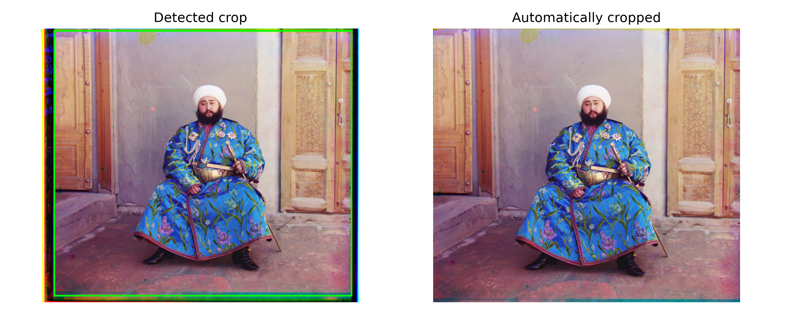
Harvesters
Provided scan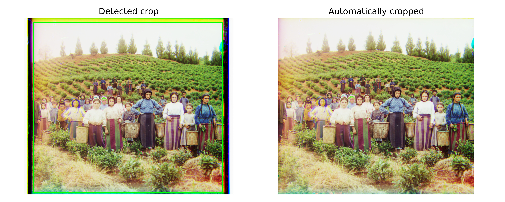
Icon
Provided scan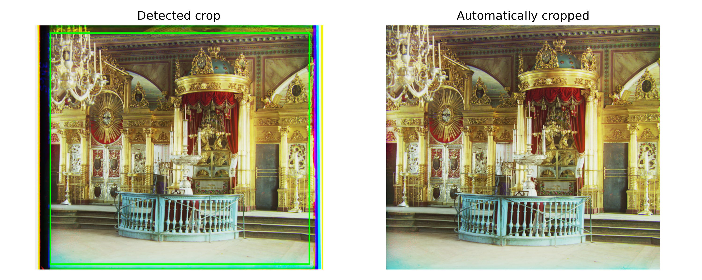
Ilemselga
Provided scan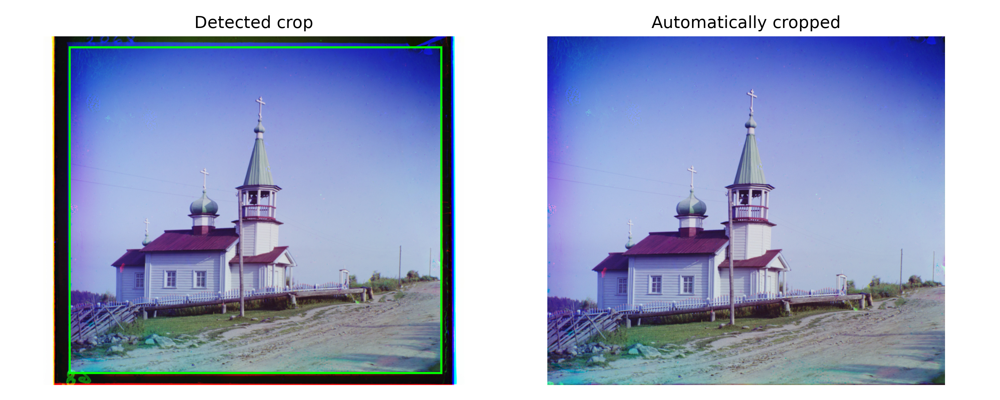
Melons
Provided scan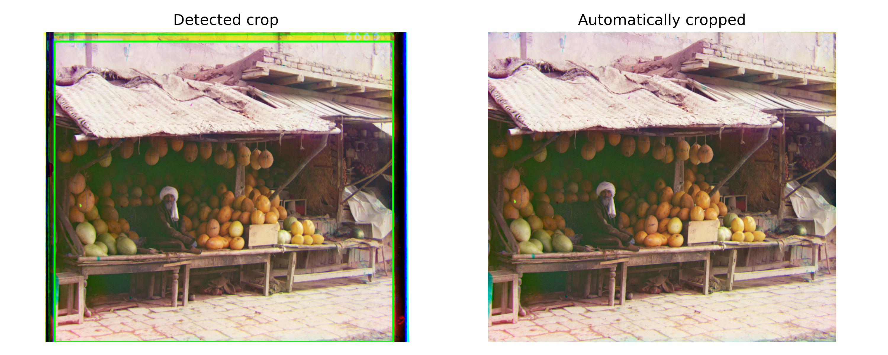
Monastery
Provided scan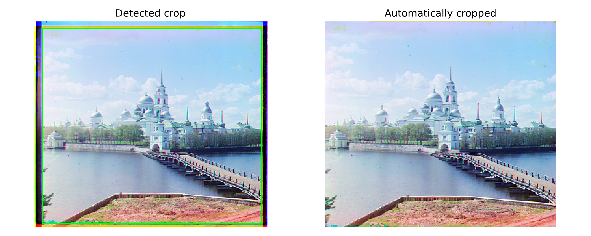
Religious painting
Provided scan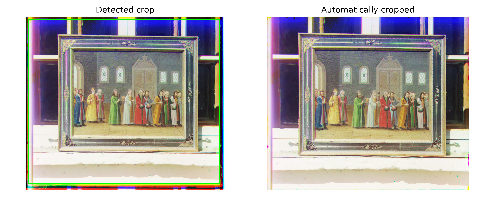
Self portrait
Provided scan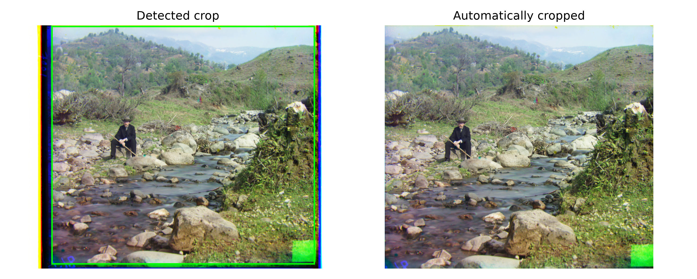
Siren
Provided scan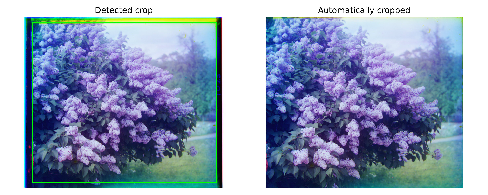
Three generations
Provided scan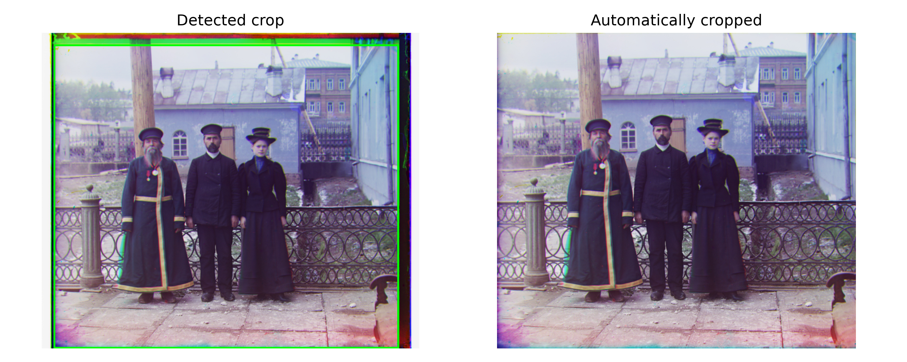
Tobolsk
Provided scan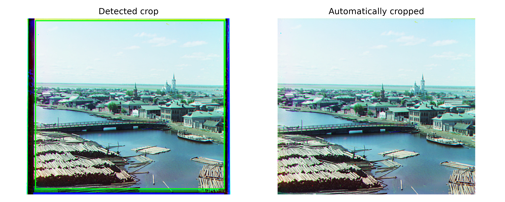
Wharf
Provided scanLugano
Selected scanNovaia Ladoga
Selected scanUpper Volga lock
Selected scanAutomatic contrast
Compare full-range normalization with a percentile stretch.
Starting from the automatically cropped image, I estimate a shared lower and upper intensity bound across all pixels and RGB channels. The same transform is applied to every channel:
I′ = clip((I − low) / (high − low), 0, 1)
Min-max stretching uses the global minimum and maximum. Percentile stretching instead uses the pooled 1st and 99th percentiles to reduce the influence of isolated extremes. All images use the same percentile settings, and nearly constant inputs are returned unchanged.
Estimating bounds after cropping reduces the influence of the scan borders. A shared transform avoids independently normalizing each channel as a white-balance operation, although subtracting an offset and clipping can still affect perceived saturation. Alignment and cropping are identical in all three columns.
Results & discussion
- Min-max stretching changes most outputs only slightly because their cropped intensity ranges already approach 0 and 1. For example,
churchspans 0.0039–1.0000, so isolated extreme samples limit the adjustment. - The 1%-99% stretch gives stronger contrast in
churchandlugano, making buildings and landscape features stand out more. It also deepens shadows and brightens highlights, potentially hiding detail in those regions. - Percentile stretching clips approximately 1% of channel samples in each tail; rates can be lower because many samples share the cutoff value. Clipping redistributes intensities and can accumulate values at the endpoints.
- The shared RGB mapping does not correct color casts. Blue tones in
ilemselgaand the yellow sky band innovaia_ladogabecome more prominent, showing that stronger contrast is not always a better restoration.
| Image | Method | Low | High | Below low | Above high | Time (s) |
|---|---|---|---|---|---|---|
| cathedral | minmax | 0.0000 | 1.0000 | 0.00% | 0.00% | 0.002 |
| cathedral | percentile | 0.1059 | 0.9137 | 0.93% | 0.89% | 0.003 |
| church | minmax | 0.0039 | 1.0000 | 0.00% | 0.00% | 0.201 |
| church | percentile | 0.1529 | 0.9300 | 0.99% | 0.98% | 0.238 |
| emir | minmax | 0.0277 | 1.0000 | 0.00% | 0.00% | 0.158 |
| emir | percentile | 0.0902 | 0.8838 | 0.97% | 1.00% | 0.224 |
| harvesters | minmax | 0.0039 | 0.9912 | 0.00% | 0.00% | 0.153 |
| harvesters | percentile | 0.0934 | 0.9602 | 1.00% | 0.86% | 0.274 |
| icon | minmax | 0.0235 | 0.9523 | 0.00% | 0.00% | 0.154 |
| icon | percentile | 0.0941 | 0.9185 | 0.99% | 1.00% | 0.256 |
| ilemselga | minmax | 0.0039 | 0.9978 | 0.00% | 0.00% | 0.156 |
| ilemselga | percentile | 0.1041 | 0.8983 | 1.00% | 0.95% | 0.261 |
| melons | minmax | 0.0039 | 1.0000 | 0.00% | 0.00% | 0.164 |
| melons | percentile | 0.0969 | 0.9578 | 1.00% | 1.00% | 0.294 |
| monastery | minmax | 0.0000 | 1.0000 | 0.00% | 0.00% | 0.001 |
| monastery | percentile | 0.1020 | 0.9804 | 0.92% | 0.80% | 0.003 |
| religous_painting | minmax | 0.0039 | 0.9986 | 0.00% | 0.00% | 0.173 |
| religous_painting | percentile | 0.0959 | 0.9785 | 1.00% | 0.96% | 0.287 |
| self_portrait | minmax | 0.0039 | 1.0000 | 0.00% | 0.00% | 0.180 |
| self_portrait | percentile | 0.1117 | 0.9446 | 1.00% | 0.99% | 0.232 |
| siren | minmax | 0.0277 | 1.0000 | 0.00% | 0.00% | 0.171 |
| siren | percentile | 0.0277 | 0.9626 | 0.00% | 0.98% | 0.278 |
| three_generations | minmax | 0.0039 | 0.9647 | 0.00% | 0.00% | 0.225 |
| three_generations | percentile | 0.0941 | 0.9098 | 0.96% | 0.84% | 0.269 |
| tobolsk | minmax | 0.0000 | 1.0000 | 0.00% | 0.00% | 0.002 |
| tobolsk | percentile | 0.0510 | 0.9765 | 1.00% | 0.51% | 0.003 |
| wharf | minmax | 0.0039 | 1.0000 | 0.00% | 0.00% | 0.170 |
| wharf | percentile | 0.1098 | 0.8983 | 1.00% | 0.97% | 0.332 |
| lugano | minmax | 0.0039 | 1.0000 | 0.00% | 0.00% | 0.201 |
| lugano | percentile | 0.1451 | 0.9725 | 0.89% | 0.92% | 0.248 |
| novaia_ladoga | minmax | 0.0039 | 1.0000 | 0.00% | 0.00% | 0.160 |
| novaia_ladoga | percentile | 0.1098 | 0.9333 | 0.95% | 0.97% | 0.280 |
| upper_volga_lock | minmax | 0.0275 | 0.9765 | 0.00% | 0.00% | 0.170 |
| upper_volga_lock | percentile | 0.1373 | 0.9137 | 0.94% | 0.83% | 0.249 |
Clipping rates count channel samples strictly outside the bounds, not unique pixels. Timing covers contrast adjustment only.
Cathedral
Provided scanChurch
Provided scanEmir of Bukhara
Provided scanHarvesters
Provided scanIcon
Provided scanIlemselga
Provided scanMelons
Provided scanMonastery
Provided scanReligious painting
Provided scanSelf portrait
Provided scanSiren
Provided scanThree generations
Provided scanTobolsk
Provided scanWharf
Provided scanLugano
Selected scanNovaia Ladoga
Selected scanUpper Volga lock
Selected scanAutomatic white balance
Estimate global channel gains, then compare them with manually selected neutral references.
White balance estimates an illuminant and counteracts its color using RGB gains. These experiments start from the same automatically cropped images, without contrast stretching or color mapping.
Two automatic estimates
Gray World assumes the scene’s average color should be neutral. For channel means μR, μG, μB, I set the target to their average and scale each channel by target / μc, then clip the image to [0, 1].
Filtered Gray World estimates those means from pixels with every channel in (0.05, 0.95) and saturation (max − min) / max below 0.35. It falls back to all pixels if fewer than 1% qualify. This excludes dark, nearly saturated, and strongly colorful pixels, but does not guarantee that the retained pixels are neutral.
A manually assisted reference comparison
I also select candidate white or gray regions by visual inspection with assistant help. These selections are made separately within each image; no gains are transferred across images. After removing extreme pixels, I measure each region’s median RGB, normalize it by its channel average, and take the componentwise median across the image’s regions. Inverse relative channel values provide the gains.
The green boxes identify these references. White clothing and light surfaces are plausible candidates, while the cloud in cathedral, rock in self_portrait, and sky in siren are uncertain. This third method is manually assisted, rather than part of the automatic illuminant estimation. Neutralization targets equal channel values, not pure white or equal brightness across scenes.
Results & discussion
- Gray World uses all-pixel channel means. It reduces overall imbalance but can mistake dominant scene colors for illumination, producing a strong yellow shift in
siren. - Filtered Gray World excludes dark, near-saturated, and highly colorful pixels. It reduces the overcorrection in
siren, but the remaining pixels are not necessarily neutral. - Per-image neutral-region calibration estimates separate gains from each image's selected references. It makes mild changes to
emirandlugano, but neutralizing the collar inthree_generationsstill leaves a yellow-green shift elsewhere. - Manual selection: the performance of neutral-region calibration depends on the regions chosen by the person selecting them. Non-neutral materials, shadows, or highlights can bias the gains; cloud, rock, and sky references are particularly uncertain.
- All three methods apply global channel scaling, so local stains and spatially varying color casts remain unresolved.
| Image | Method | Applied gains (R, G, B) | Clipped | Fallback | Time (s) |
|---|---|---|---|---|---|
| cathedral | gray_world | 0.880, 0.967, 1.206 | 3.72% | False | 0.004 |
| cathedral | filtered | 0.988, 0.997, 1.016 | 0.00% | False | 0.008 |
| cathedral | neutral | 0.971, 1.002, 1.029 | 0.00% | False | 0.003 |
| church | gray_world | 1.154, 1.132, 0.800 | 0.21% | False | 0.359 |
| church | filtered | 1.094, 1.111, 0.843 | 0.15% | False | 0.710 |
| church | neutral | 0.965, 1.018, 1.019 | 0.01% | False | 0.145 |
| emir | gray_world | 0.911, 1.085, 1.020 | 0.11% | False | 0.268 |
| emir | filtered | 0.912, 1.061, 1.040 | 0.09% | False | 0.599 |
| emir | neutral | 0.999, 1.007, 0.994 | 0.00% | False | 0.190 |
| harvesters | gray_world | 0.891, 0.938, 1.234 | 6.41% | False | 0.385 |
| harvesters | filtered | 0.950, 0.977, 1.083 | 4.17% | False | 0.531 |
| harvesters | neutral | 0.998, 0.986, 1.017 | 0.00% | False | 0.154 |
| icon | gray_world | 0.874, 0.930, 1.282 | 3.69% | False | 0.232 |
| icon | filtered | 0.984, 0.951, 1.073 | 0.01% | False | 0.551 |
| icon | neutral | 1.010, 0.981, 1.010 | 0.00% | False | 0.142 |
| ilemselga | gray_world | 1.198, 1.082, 0.806 | 0.07% | False | 0.233 |
| ilemselga | filtered | 1.110, 1.029, 0.887 | 0.00% | False | 0.614 |
| ilemselga | neutral | 1.017, 1.008, 0.977 | 0.00% | False | 0.138 |
| melons | gray_world | 0.884, 1.007, 1.142 | 1.48% | False | 0.541 |
| melons | filtered | 0.922, 1.020, 1.071 | 0.01% | False | 0.644 |
| melons | neutral | 0.903, 1.063, 1.051 | 0.22% | False | 0.138 |
| monastery | gray_world | 1.085, 1.005, 0.923 | 0.80% | False | 0.003 |
| monastery | filtered | 1.072, 0.999, 0.938 | 0.59% | False | 0.007 |
| monastery | neutral | 1.000, 1.059, 0.947 | 0.17% | False | 0.002 |
| religous_painting | gray_world | 0.960, 1.018, 1.025 | 0.03% | False | 0.234 |
| religous_painting | filtered | 0.957, 0.986, 1.064 | 1.66% | False | 0.602 |
| religous_painting | neutral | 0.971, 0.985, 1.047 | 0.56% | False | 0.146 |
| self_portrait | gray_world | 0.978, 0.937, 1.098 | 1.83% | False | 0.242 |
| self_portrait | filtered | 1.001, 0.968, 1.034 | 0.06% | False | 0.652 |
| self_portrait | neutral | 0.950, 0.966, 1.096 | 1.78% | False | 0.139 |
| siren | gray_world | 1.233, 1.077, 0.794 | 2.15% | False | 0.301 |
| siren | filtered | 1.109, 1.026, 0.890 | 0.09% | False | 0.516 |
| siren | neutral | 1.081, 0.993, 0.937 | 0.00% | False | 0.141 |
| three_generations | gray_world | 1.008, 1.081, 0.923 | 0.00% | False | 0.234 |
| three_generations | filtered | 1.010, 1.043, 0.951 | 0.00% | False | 0.633 |
| three_generations | neutral | 1.066, 1.091, 0.873 | 0.00% | False | 0.142 |
| tobolsk | gray_world | 1.131, 0.953, 0.937 | 3.78% | False | 0.003 |
| tobolsk | filtered | 1.080, 0.962, 0.967 | 0.50% | False | 0.006 |
| tobolsk | neutral | 1.040, 0.979, 0.983 | 0.14% | False | 0.002 |
| wharf | gray_world | 1.024, 1.053, 0.931 | 0.01% | False | 0.230 |
| wharf | filtered | 1.010, 1.038, 0.955 | 0.01% | False | 0.701 |
| wharf | neutral | 0.949, 1.041, 1.014 | 0.01% | False | 0.145 |
| lugano | gray_world | 1.245, 0.949, 0.874 | 4.65% | False | 0.273 |
| lugano | filtered | 1.116, 0.975, 0.927 | 0.62% | False | 0.586 |
| lugano | neutral | 1.013, 0.994, 0.994 | 0.00% | False | 0.146 |
| novaia_ladoga | gray_world | 0.900, 1.025, 1.094 | 0.88% | False | 0.237 |
| novaia_ladoga | filtered | 0.988, 1.086, 0.937 | 0.27% | False | 0.574 |
| novaia_ladoga | neutral | 0.967, 1.029, 1.006 | 0.01% | False | 0.148 |
| upper_volga_lock | gray_world | 1.032, 0.916, 1.064 | 0.01% | False | 0.248 |
| upper_volga_lock | filtered | 1.060, 0.972, 0.972 | 0.00% | False | 0.691 |
| upper_volga_lock | neutral | 0.980, 0.976, 1.047 | 0.00% | False | 0.166 |
Clipped is the fraction of channel values above one before clipping. Fallback refers to filtered Gray World. Times include gain estimation and application, excluding alignment.
Cathedral
Provided scanChurch
Provided scanEmir of Bukhara
Provided scanHarvesters
Provided scanIcon
Provided scanIlemselga
Provided scanMelons
Provided scanMonastery
Provided scanReligious painting
Provided scanSelf portrait
Provided scanSiren
Provided scanThree generations
Provided scanTobolsk
Provided scanWharf
Provided scanLugano
Selected scanNovaia Ladoga
Selected scanUpper Volga lock
Selected scanBetter color mapping
Compare symmetric mixing, asymmetric mixing, and an HSV adjustment.
The historical filters need not correspond directly to modern RGB channels. I explore three global color mappings, all applied independently to the same filtered Gray World input. No contrast stretch or manual reference correction is added.
Naive symmetric matrix
0.90 0.05 0.05 0.05 0.90 0.05 0.05 0.05 0.90
Keep 90% of each channel and add 5% of each other channel. Neutral grays and the per-pixel channel average are preserved; differences between channels shrink by 15%.
Custom asymmetric matrix
0.92 0.06 0.02 0.02 0.94 0.04 0.04 0.10 0.86
Mix more green into blue than blue into green, and more green into red than red into green. This changes colors differently by direction and can alter hue.
For both matrices, c′ = Mc, with rows representing output RGB channels. Nonnegative coefficients and rows summing to one preserve neutral grays and keep inputs in [0, 1] within range. The asymmetric matrix does not generally preserve the per-pixel channel average.
HSV adjustment
H′ = (H + 0.02) mod 1 · S′ = 0.90S · V′ = V
The 0.02 hue shift is 7.2 degrees, and saturation is reduced by 10%. Preserving HSV value does not guarantee unchanged perceived brightness. The matrix coefficients and HSV parameters are fixed across all 17 images and are not fitted to reference colors.
Results & discussion
- The naive matrix softens colors uniformly; the grass in
upper_volga_lockbecomes more muted. It can also weaken colors that were already appropriate. - The asymmetric matrix makes subtler, color-dependent changes while preserving neutral grays. Its output remains close to the naive result in many scenes, so the chosen coefficients do not show a clear universal improvement.
- HSV adjustment changes hue more visibly: vegetation in
cathedralandupper_volga_lockshifts toward green, while the blue clothing inemirshifts toward violet. One global hue setting need not suit all objects. - All three mappings share the same filtered Gray World input. The pinkish sky in
luganoand the colored band innovaia_ladogaremain, showing that global color mapping does not reliably fix white-balance errors or local artifacts. - The matrix coefficients and HSV settings are heuristic choices. Without reference colors, visual preference is subjective and does not demonstrate accurate recovery of historical filter responses.
| Image | Method | WB gains (R, G, B) | WB fallback | RGB range: WB | RGB range: mapped | Mapping (s) |
|---|---|---|---|---|---|---|
| cathedral | naive | 0.988, 0.997, 1.016 | False | 0.176 | 0.150 | 0.001 |
| cathedral | asymmetric | 0.988, 0.997, 1.016 | False | 0.176 | 0.151 | 0.001 |
| cathedral | hsv | 0.988, 0.997, 1.016 | False | 0.176 | 0.159 | 0.019 |
| church | naive | 1.094, 1.111, 0.843 | False | 0.116 | 0.098 | 0.092 |
| church | asymmetric | 1.094, 1.111, 0.843 | False | 0.116 | 0.099 | 0.133 |
| church | hsv | 1.094, 1.111, 0.843 | False | 0.116 | 0.104 | 2.570 |
| emir | naive | 0.912, 1.061, 1.040 | False | 0.184 | 0.156 | 0.085 |
| emir | asymmetric | 0.912, 1.061, 1.040 | False | 0.184 | 0.158 | 0.099 |
| emir | hsv | 0.912, 1.061, 1.040 | False | 0.184 | 0.165 | 2.195 |
| harvesters | naive | 0.950, 0.977, 1.083 | False | 0.210 | 0.179 | 0.086 |
| harvesters | asymmetric | 0.950, 0.977, 1.083 | False | 0.210 | 0.178 | 0.089 |
| harvesters | hsv | 0.950, 0.977, 1.083 | False | 0.210 | 0.189 | 2.333 |
| icon | naive | 0.984, 0.951, 1.073 | False | 0.203 | 0.172 | 0.088 |
| icon | asymmetric | 0.984, 0.951, 1.073 | False | 0.203 | 0.173 | 0.105 |
| icon | hsv | 0.984, 0.951, 1.073 | False | 0.203 | 0.182 | 2.361 |
| ilemselga | naive | 1.110, 1.029, 0.887 | False | 0.166 | 0.141 | 0.084 |
| ilemselga | asymmetric | 1.110, 1.029, 0.887 | False | 0.166 | 0.141 | 0.089 |
| ilemselga | hsv | 1.110, 1.029, 0.887 | False | 0.166 | 0.149 | 2.479 |
| melons | naive | 0.922, 1.020, 1.071 | False | 0.122 | 0.104 | 0.088 |
| melons | asymmetric | 0.922, 1.020, 1.071 | False | 0.122 | 0.105 | 0.090 |
| melons | hsv | 0.922, 1.020, 1.071 | False | 0.122 | 0.110 | 2.219 |
| monastery | naive | 1.072, 0.999, 0.938 | False | 0.143 | 0.122 | 0.001 |
| monastery | asymmetric | 1.072, 0.999, 0.938 | False | 0.143 | 0.124 | 0.001 |
| monastery | hsv | 1.072, 0.999, 0.938 | False | 0.143 | 0.129 | 0.017 |
| religous_painting | naive | 0.957, 0.986, 1.064 | False | 0.164 | 0.139 | 0.088 |
| religous_painting | asymmetric | 0.957, 0.986, 1.064 | False | 0.164 | 0.139 | 0.091 |
| religous_painting | hsv | 0.957, 0.986, 1.064 | False | 0.164 | 0.147 | 2.330 |
| self_portrait | naive | 1.001, 0.968, 1.034 | False | 0.143 | 0.121 | 0.090 |
| self_portrait | asymmetric | 1.001, 0.968, 1.034 | False | 0.143 | 0.121 | 0.123 |
| self_portrait | hsv | 1.001, 0.968, 1.034 | False | 0.143 | 0.128 | 1.954 |
| siren | naive | 1.109, 1.026, 0.890 | False | 0.185 | 0.157 | 0.087 |
| siren | asymmetric | 1.109, 1.026, 0.890 | False | 0.185 | 0.157 | 0.091 |
| siren | hsv | 1.109, 1.026, 0.890 | False | 0.185 | 0.166 | 2.302 |
| three_generations | naive | 1.010, 1.043, 0.951 | False | 0.122 | 0.104 | 0.086 |
| three_generations | asymmetric | 1.010, 1.043, 0.951 | False | 0.122 | 0.104 | 0.103 |
| three_generations | hsv | 1.010, 1.043, 0.951 | False | 0.122 | 0.110 | 1.999 |
| tobolsk | naive | 1.080, 0.962, 0.967 | False | 0.149 | 0.127 | 0.001 |
| tobolsk | asymmetric | 1.080, 0.962, 0.967 | False | 0.149 | 0.130 | 0.001 |
| tobolsk | hsv | 1.080, 0.962, 0.967 | False | 0.149 | 0.134 | 0.017 |
| wharf | naive | 1.010, 1.038, 0.955 | False | 0.131 | 0.111 | 0.115 |
| wharf | asymmetric | 1.010, 1.038, 0.955 | False | 0.131 | 0.112 | 0.088 |
| wharf | hsv | 1.010, 1.038, 0.955 | False | 0.131 | 0.117 | 2.299 |
| lugano | naive | 1.116, 0.975, 0.927 | False | 0.167 | 0.142 | 0.095 |
| lugano | asymmetric | 1.116, 0.975, 0.927 | False | 0.167 | 0.145 | 0.097 |
| lugano | hsv | 1.116, 0.975, 0.927 | False | 0.167 | 0.150 | 2.557 |
| novaia_ladoga | naive | 0.988, 1.086, 0.937 | False | 0.256 | 0.218 | 0.084 |
| novaia_ladoga | asymmetric | 0.988, 1.086, 0.937 | False | 0.256 | 0.217 | 0.083 |
| novaia_ladoga | hsv | 0.988, 1.086, 0.937 | False | 0.256 | 0.231 | 1.531 |
| upper_volga_lock | naive | 1.060, 0.972, 0.972 | False | 0.144 | 0.122 | 0.081 |
| upper_volga_lock | asymmetric | 1.060, 0.972, 0.972 | False | 0.144 | 0.121 | 0.083 |
| upper_volga_lock | hsv | 1.060, 0.972, 0.972 | False | 0.144 | 0.130 | 1.553 |
Mean RGB range is the average per-pixel maximum minus minimum channel value. It measures channel separation, not color accuracy. Times cover mapping only; the shared white-balance stage is excluded.